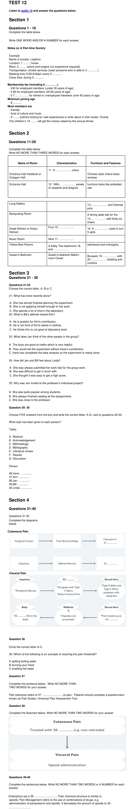

IELTS Listening: Test 12
Audio
The recording is split into the four sections. In the exam you hear each one once, so try a first listen without pausing.
Question book
Section 1
Questions 1–10
Complete the table below.
Write ONE WORD AND/OR A NUMBER for each answer.
Notes on A Part-time Society
Example
Name of society: Leighton
Location: 1 house
Want: 2 actors and singers (no experience required)
Transportation: shuttle services (need someone who is able to 3 )
Meeting time: 6:00-8:00pm every 4
Close time: during 5
Membership fee (including 6 )
£40 for employed members (under 30 years of age)
£ 60 for employed members (30-60 years of age)
£ 7 for retired or unemployed members (over 60 years of age)
Minimum joining age
8
Most members are
friendly
fond of culture and music
9 authors looking for new experiences to write about in their books Charity
The children’s 10 will get the money raised by the annual dinner.
Section 2
Questions 11–20
Complete the table below.
Write NO MORE THAN THREE WORDS for each answer.
| Name of Room | Characteristics | Furniture and Features |
|---|---|---|
| Entrance Hall Vestibule or Octagon Hall | A 11 colour | Chinese style chairs brass enclose |
| Entrance Hall | With 12 panels of serpents and dragons | furniture looks like pollarded oak |
| Long Gallery | 13 and Oriental pots | |
| Banqueting Room | A dining table laid for the 14 , with thirty-six chairs | |
| Great Kitchen or King’s Kitchen | Four 15 | A 16 used to turn 5 spits |
| Music Room | Nine 17 | |
| Yellow Bow Rooms | A lobby Two bedrooms and 18 | satinwood and mahogany |
| Queen’s Bedroom | Queen’s bedroom Maid’s room Closet | Brussels 19 with 20 bedding and curtains |
Section 3
Questions 21–25
Choose the correct letter, A, B or C.
21 What has Irene recently done?
- A She has almost finished planning the experiment.
- B She is not applying herself enough to her work.
- C She spends a lot of time in the laboratory.
22 What is Bill’s attitude toward Kim?
- A He is grateful for Kim's contribution.
- B He is not fond of Kim's tastes in clothes.
- C He thinks Kim is not good at laboratory work.
23 What does Jen think of the other people in the group?
- A The boys are good at maths which is very helpful.
- B They would fail the experiment without Irene’s contribution.
- C Irene has completed the data analysis so the experiment is nearly done.
24 How did Jen and Bill feel about Linda?
- A She was always submitted her work late for the group work.
- B She was difficult to get in touch with.
- C She thought it was easy to get a high score.
25 Why was Jen invited to the professor’s individual project?
- A She was quite popular among students.
- B She always finished reading all the assignments.
- C She was close to the professor.
Questions 26–30
Choose FIVE answers from the box and write the correct letter, A-G, next to questions 26-30.
What task has been given to each person?
Tasks
- A Abstract
- B Acknowledgement
- C Methodology
- D Bibliography
- E Literature review
- F Results
- G Discussion
Person
26 Irene …............
27 Kim ...............
28 Jen …............
29 Bill ...............
30 Linda ...............
Section 4
Question 36
Circle the correct letter A-C.
36 Which of the following is an example of reaching the pain threshold?
- A spilling boiling water
- B burning your hand
- C scalding hot water
Question 37
Complete the sentence below. Write NO MORE THAN TWO WORDS for your answer.
Pain tolerance refers to 37 to pain. Patients should complete a questionnaire known as Pain Scales: Universal Pain Assessment Tool.
Questions 39–40
Complete the sentences below. Write NO MORE THAN TWO WORDS or A NUMBER for each answer.
Endorphins are a 39 Their chemical structure is similar to opioids. Pain Management refers to the use of combinations of drugs, e.g. administration of paracetamol and opioids. It decreases the amount of opioids to 40
Show the original book pages (picture)

Tap or click the pages to open them full size in a new tab.
Answer sheet
Marking ignores capital letters and accepts plurals and the usual alternative answers. If your answer is right but not accepted, press My answer is also right under it.
Tapescript
Check your answers first, then the tapescript opens here.